Guide
A useful entry point for visitors who need more context before they ask an engineer.
Resources / 01
Resources opens as a clear engineering decision hub: what Core offers, who it helps, why it matters, and which route to take first.
The first screen combines positioning, proof, primary action, and fast internal navigation, so people can act immediately or compare the rest of the resources route with context.
Red-rule technical hero
Select the closest route and Core keeps the next step, proof, and follow-up expectation aligned with reliability and standards.
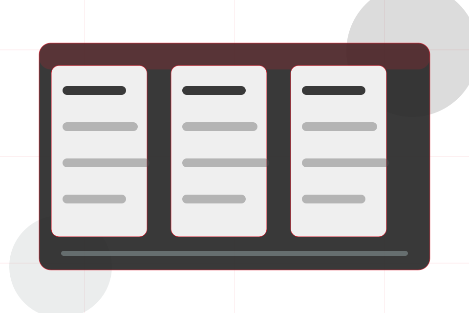
Resources / 02
Specs gives researching visitors a practical route into guides, checklists, and comparison material without leaving the site structure.
Each resource behaves like a useful internal link, giving cold and warm visitors a way to learn, compare, and return to the action path.
Explore Resources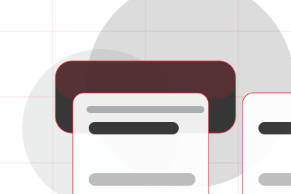
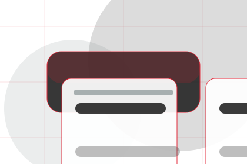
A useful entry point for visitors who need more context before they ask an engineer.
Resources / 03
Papers gives researching visitors a practical route into guides, checklists, and comparison material without leaving the site structure.
Each resource behaves like a useful internal link, giving cold and warm visitors a way to learn, compare, and return to the action path.
Explore ResourcesA useful entry point for visitors who need more context before they ask an engineer.
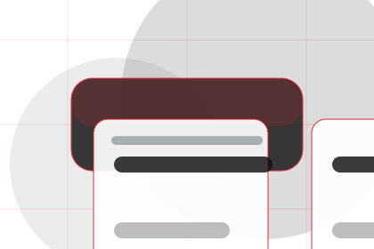
A scannable comparison aid that makes research usable before the next decision.
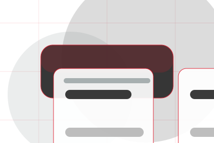
A route back to support, services, or contact when the visitor is ready to act.
Resources / 04
Guides gives researching visitors a practical route into guides, checklists, and comparison material without leaving the site structure.
Each resource behaves like a useful internal link, giving cold and warm visitors a way to learn, compare, and return to the action path.
View ResourcesA useful entry point for visitors who need more context before they ask an engineer.
A scannable comparison aid that makes research usable before the next decision.
A route back to support, services, or contact when the visitor is ready to act.
A useful entry point for visitors who need more context before they ask an engineer.
Open resourceA scannable comparison aid that makes research usable before the next decision.
Open resource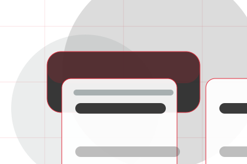
PlaybookA route back to support, services, or contact when the visitor is ready to act.
Open resourceResources / 05
Downloads gives researching visitors a practical route into guides, checklists, and comparison material without leaving the site structure.
Each resource behaves like a useful internal link, giving cold and warm visitors a way to learn, compare, and return to the action path.
View ResourcesA useful entry point for visitors who need more context before they ask an engineer.
A scannable comparison aid that makes research usable before the next decision.
A route back to support, services, or contact when the visitor is ready to act.
A useful entry point for visitors who need more context before they ask an engineer.
Open resourceA scannable comparison aid that makes research usable before the next decision.
Open resource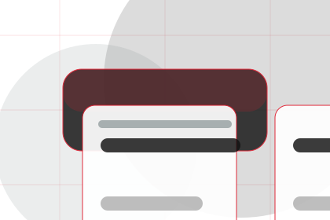
PlaybookA route back to support, services, or contact when the visitor is ready to act.
Open resourceResources / 06
Standards gives the proof layer for resources: standards, evidence, and reassurance that make the next decision feel grounded.
Instead of relying on vague claims, Core presents visible standards, process cues, and proof artifacts that help engineering visitors judge fit.
Explore ResourcesVisible proof that helps visitors believe the claims behind standards.
The quality, safety, or operating expectation this section makes explicit.
What becomes clearer before someone decides whether to ask an engineer.
Resources / 07
Maintenance explains the operating sequence so visitors can see how the first request becomes a clear recommendation and follow-up.
The steps are written from the visitor side: what they do first, what Core clarifies, what they receive, and how support continues.
Explore ResourcesHow visitors begin this route and what detail is useful at the first step.
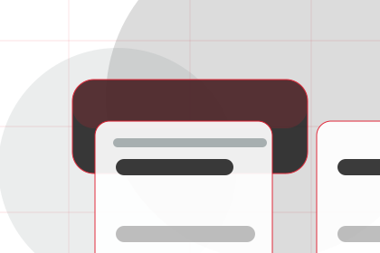
What Core reviews, filters, or explains before recommending the next move.
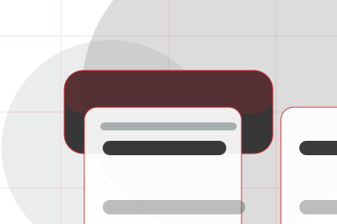
What the visitor receives afterward, including support, proof, or a handoff to the next page.
Resources / 08
Library gives researching visitors a practical route into guides, checklists, and comparison material without leaving the site structure.
Each resource behaves like a useful internal link, giving cold and warm visitors a way to learn, compare, and return to the action path.
Explore ResourcesA useful entry point for visitors who need more context before they ask an engineer.
A scannable comparison aid that makes research usable before the next decision.
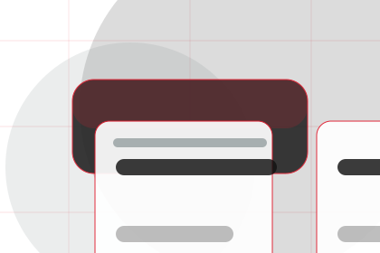
A route back to support, services, or contact when the visitor is ready to act.
Red-rule technical hero
Select the closest route and Core keeps the next step, proof, and follow-up expectation aligned with reliability and standards.
Resources / 09
Learn gives researching visitors a practical route into guides, checklists, and comparison material without leaving the site structure.
Each resource behaves like a useful internal link, giving cold and warm visitors a way to learn, compare, and return to the action path.
Explore ResourcesA useful entry point for visitors who need more context before they ask an engineer.
A scannable comparison aid that makes research usable before the next decision.
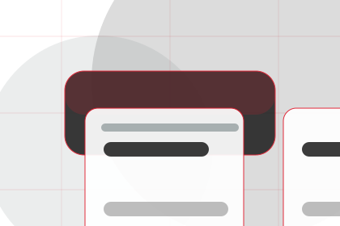
A route back to support, services, or contact when the visitor is ready to act.
Resources / 10
Core closes the resources route with a clear action, a quick reminder of the value, and a low-friction way to ask an engineer.
Visitors who are ready can use the primary action. Visitors who are still comparing can scan the section links, proof, and support routes before they ask an engineer.
Ask EngineerThe final block keeps the choice simple: act now, compare one more proof route, or send enough detail for a focused response.
Ask Engineerreliability and standards
An engineering authority site with editorial project blocks, red rules, technical proof, and expert enquiry. Resources ends with a direct path to ask an engineer, plus enough context for visitors who still need to compare.
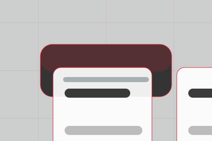
Ask EngineerInformation is provided for planning and should be reviewed for the final client, location, and operating rules.